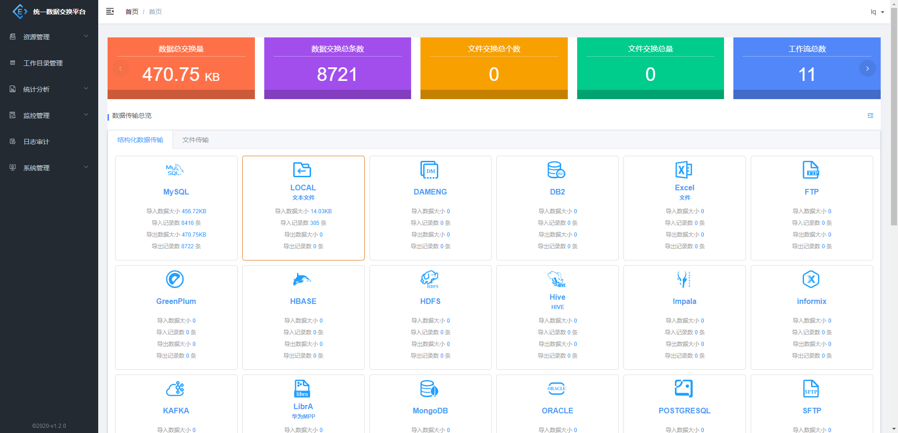
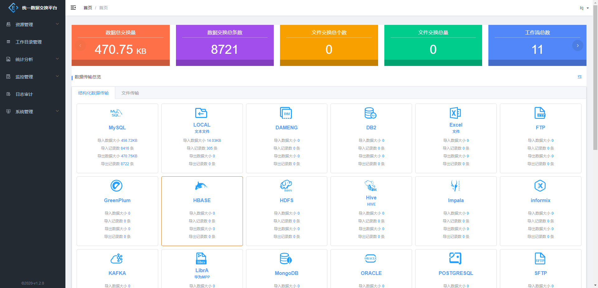

Report generated on 04-Aug-2020 at 10:39:51 by pytest-html v2.1.1
| JAVA_HOME | H:\Program Files\Java\jdk1.8.0_151 |
| Packages | {"pluggy": "0.13.1", "py": "1.9.0", "pytest": "5.4.3"} |
| Platform | Windows-10-10.0.18362-SP0 |
| Plugins | {"Faker": "4.1.1", "cov": "2.10.0", "html": "2.1.1", "metadata": "1.10.0"} |
| Python | 3.6.5 |
5 tests ran in 24.96 seconds.
(Un)check the boxes to filter the results.
0 passed, 0 skipped, 5 failed, 0 errors, 0 expected failures, 0 unexpected passes| Result | Test | Description | Duration |
|---|---|---|---|
| No results found. Try to check the filters | |||
| Failed | TestCases/user_story/test_2_story_one.py::TestUserStoryOne::test_add_operation_system[zh_name] |
名称：添加应用 前置：登录系统 步骤： 1、点击资源管理展开菜单 2、点击应用管理 3、点击添加，输入应用信息 4、点击确定 检查点： * 检查页面弹出的提示信息。
|
0.00 |
|
 self = <TestCases.user_story.test_2_story_one.TestUserStoryOne object at 0x00000182B2A89E80> browser = <selenium.webdriver.chrome.webdriver.WebDriver (session="a85e39665dd875a3d3c803179925ad1f")> data = 'zh_name' @pytest.mark.parametrize("data", operation_system_1) def test_add_operation_system(self, browser, data): """ 名称：添加应用 前置：登录系统 步骤： 1、点击资源管理展开菜单 2、点击应用管理 3、点击添加，输入应用信息 4、点击确定 检查点： * 检查页面弹出的提示信息。 """ > hp(browser).add_operation_system(data["zh_name"], data["code"], data["short_zn_name"], data["en_name"], data["short_en_name"], data["sys_remark"], data["sys_version"], data["dept"], data["contacter"], data["mobile"], data["email"]) E TypeError: string indices must be integers TestCases\user_story\test_2_story_one.py:44: TypeError -------------------------------Captured log setup------------------------------- INFO root:BasePage.py:37 None：等待元素可见：('xpath', '//input[@name="username"]') INFO root:BasePage.py:42 等待时长0.05：以秒为单位 INFO root:BasePage.py:50 None：查找元素：('xpath', '//input[@name="username"]') INFO root:BasePage.py:64 None：在元素('xpath', '//input[@name="username"]')中输入文本：lq INFO root:BasePage.py:50 None：查找元素：('xpath', '//input[@name="password"]') INFO root:BasePage.py:64 None：在元素('xpath', '//input[@name="password"]')中输入文本：lq INFO root:BasePage.py:50 None：查找元素：('xpath', '//span[text()="登 录"]') INFO root:BasePage.py:78 None:元素：('xpath', '//span[text()="登 录"]')点击事件 | |||
| Failed | TestCases/user_story/test_2_story_one.py::TestUserStoryOne::test_add_operation_system[code] |
名称：添加应用 前置：登录系统 步骤： 1、点击资源管理展开菜单 2、点击应用管理 3、点击添加，输入应用信息 4、点击确定 检查点： * 检查页面弹出的提示信息。
|
0.00 |
|
 self = <TestCases.user_story.test_2_story_one.TestUserStoryOne object at 0x00000182B2B9C6A0> browser = <selenium.webdriver.chrome.webdriver.WebDriver (session="a85e39665dd875a3d3c803179925ad1f")> data = 'code' @pytest.mark.parametrize("data", operation_system_1) def test_add_operation_system(self, browser, data): """ 名称：添加应用 前置：登录系统 步骤： 1、点击资源管理展开菜单 2、点击应用管理 3、点击添加，输入应用信息 4、点击确定 检查点： * 检查页面弹出的提示信息。 """ > hp(browser).add_operation_system(data["zh_name"], data["code"], data["short_zn_name"], data["en_name"], data["short_en_name"], data["sys_remark"], data["sys_version"], data["dept"], data["contacter"], data["mobile"], data["email"]) E TypeError: string indices must be integers TestCases\user_story\test_2_story_one.py:44: TypeError | |||
| Failed | TestCases/user_story/test_2_story_one.py::TestUserStoryOne::test_add_operation_system[short_zn_name] |
名称：添加应用 前置：登录系统 步骤： 1、点击资源管理展开菜单 2、点击应用管理 3、点击添加，输入应用信息 4、点击确定 检查点： * 检查页面弹出的提示信息。
|
0.00 |
|
self = <TestCases.user_story.test_2_story_one.TestUserStoryOne object at 0x00000182B2BCB198> browser = <selenium.webdriver.chrome.webdriver.WebDriver (session="a85e39665dd875a3d3c803179925ad1f")> data = 'short_zn_name' @pytest.mark.parametrize("data", operation_system_1) def test_add_operation_system(self, browser, data): """ 名称：添加应用 前置：登录系统 步骤： 1、点击资源管理展开菜单 2、点击应用管理 3、点击添加，输入应用信息 4、点击确定 检查点： * 检查页面弹出的提示信息。 """ > hp(browser).add_operation_system(data["zh_name"], data["code"], data["short_zn_name"], data["en_name"], data["short_en_name"], data["sys_remark"], data["sys_version"], data["dept"], data["contacter"], data["mobile"], data["email"]) E TypeError: string indices must be integers TestCases\user_story\test_2_story_one.py:44: TypeError | |||
| Failed | TestCases/user_story/test_2_story_one.py::TestUserStoryOne::test_add_operation_system[en_name] |
名称：添加应用 前置：登录系统 步骤： 1、点击资源管理展开菜单 2、点击应用管理 3、点击添加，输入应用信息 4、点击确定 检查点： * 检查页面弹出的提示信息。
|
0.00 |
|
self = <TestCases.user_story.test_2_story_one.TestUserStoryOne object at 0x00000182B2BD61D0> browser = <selenium.webdriver.chrome.webdriver.WebDriver (session="a85e39665dd875a3d3c803179925ad1f")> data = 'en_name' @pytest.mark.parametrize("data", operation_system_1) def test_add_operation_system(self, browser, data): """ 名称：添加应用 前置：登录系统 步骤： 1、点击资源管理展开菜单 2、点击应用管理 3、点击添加，输入应用信息 4、点击确定 检查点： * 检查页面弹出的提示信息。 """ > hp(browser).add_operation_system(data["zh_name"], data["code"], data["short_zn_name"], data["en_name"], data["short_en_name"], data["sys_remark"], data["sys_version"], data["dept"], data["contacter"], data["mobile"], data["email"]) E TypeError: string indices must be integers TestCases\user_story\test_2_story_one.py:44: TypeError | |||
| Failed | TestCases/user_story/test_2_story_one.py::TestUserStoryOne::test_add_operation_system[short_en_name] |
名称：添加应用 前置：登录系统 步骤： 1、点击资源管理展开菜单 2、点击应用管理 3、点击添加，输入应用信息 4、点击确定 检查点： * 检查页面弹出的提示信息。
|
0.00 |
|
self = <TestCases.user_story.test_2_story_one.TestUserStoryOne object at 0x00000182B2BEFC88> browser = <selenium.webdriver.chrome.webdriver.WebDriver (session="a85e39665dd875a3d3c803179925ad1f")> data = 'short_en_name' @pytest.mark.parametrize("data", operation_system_1) def test_add_operation_system(self, browser, data): """ 名称：添加应用 前置：登录系统 步骤： 1、点击资源管理展开菜单 2、点击应用管理 3、点击添加，输入应用信息 4、点击确定 检查点： * 检查页面弹出的提示信息。 """ > hp(browser).add_operation_system(data["zh_name"], data["code"], data["short_zn_name"], data["en_name"], data["short_en_name"], data["sys_remark"], data["sys_version"], data["dept"], data["contacter"], data["mobile"], data["email"]) E TypeError: string indices must be integers TestCases\user_story\test_2_story_one.py:44: TypeError | |||